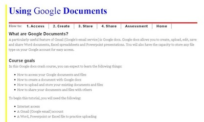
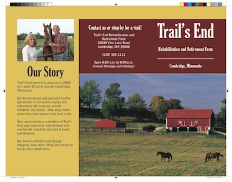
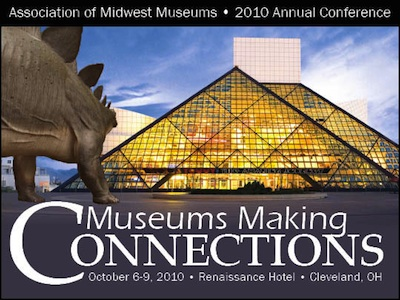

Google Documents Tutorial
Created Spring 2010
As part of an instructional design course, I created this short lesson on how to use the documents feature of Gmail.
The lesson teaches users how to access Google docs, create new Google docs, store Google docs and files, and share Google docs and files with others.
The lesson ends with a small task to measure what students have learned.
View full lesson

Trifold Color Brochure
Created Spring 2010
As part of a document design course, I created this full-color trifold brochure.
The client was a fictional horse rehabilitation and retirement farm in Minnesota. Photos and content were provided by the instructor; design decisions were entirely up to the students.
I consider this one of my most professional-looking pieces. I was inspired by the red on the barn, and added the golden yellow for a very farm-y contrast.
View Full Version (PDF)

Web-ready Flyer for 2010 Museums Making Connections conference
Created Spring 2010
This web flyer was created through a document design course for a real client: the Association of Midwest Museums. The AMM was having its 2010 annual conference in Cleveland, and our class was invited to sumbit design ideas to be used as promotional materials for the conference.
While this design was not selected for the conference, it was applauded for its whimsical approach. The image features a dinosaur from the Cleveland Museum of Natural History approaching the Rock and Roll Hall of Fame.
Design Team: Christopher Chock, Serena Li, Brenna Scurlock and Emily Sutherlin.
- Roots Grow Deep at Corn Stock Theatre
- From art and society
- Nestled in the lush foliage of upper Bradley Park, Corn Stock Theatre offers local thespians and theater patrons alike a creative outlet, a source of entertainment and a strong sense of community. Peoria's only outdoor theater provides a tranquil viewing ambiance that makes it the "prettiest place to see theater in the area," according to business manager Cindy Hoey. With a league of dedicated volunteers and a venue unlike any other, Corn Stock Theatre serves as a truly unique example of local, independent theater.
- Read More
- How to Date on a Budget
- From the Bradley Scout
- Dinner and a movie: couples have been going on this classic date since motion pictures first premiered. This traditional outing covers all the dating bases: food, entertainment and time spent together. But with rising restaurant and theater costs, young couples need to be more creative with their courtship so as not to break the bank with every rendezvous.
- Read More
- Pouch takes the Ouch out of Recovery
- From The Peoria Woman
- With a little fabric, some thread, a lot of creativity and even more generosity, sewers across the country will band together in 2008 in a national effort to produce thousands of pain-relieving pouches that originated right here in Peoria.
- Read More